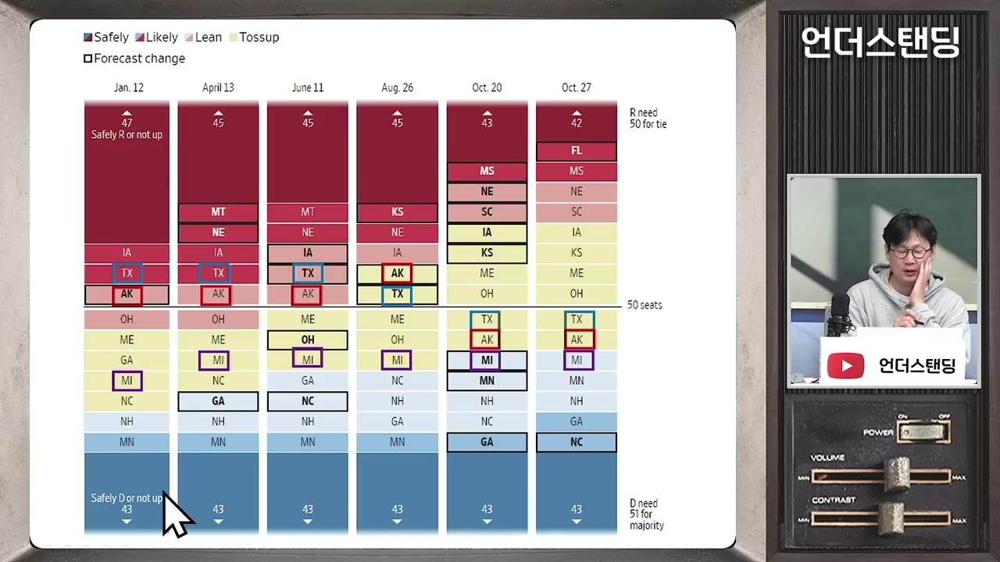
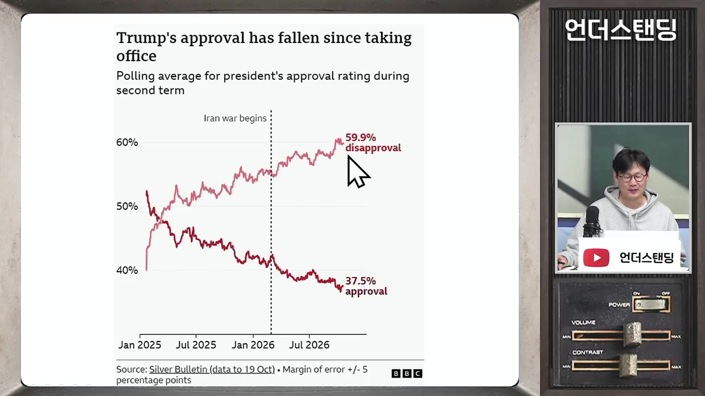
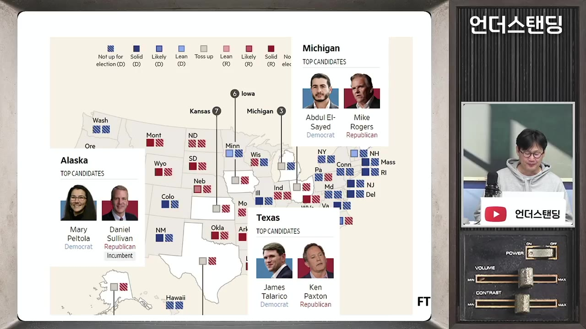
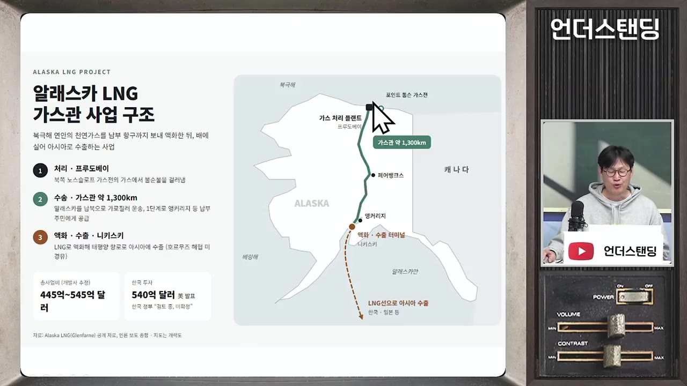
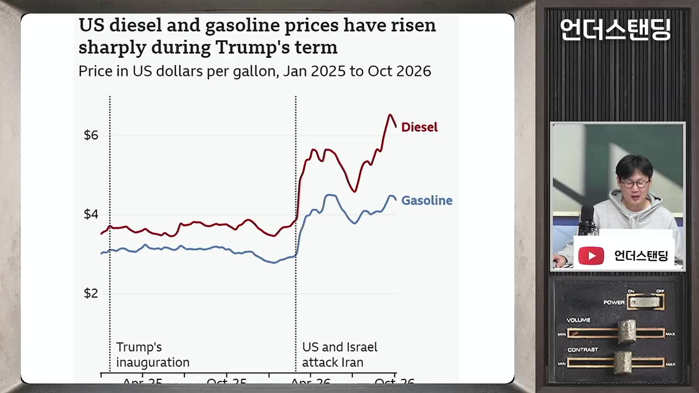
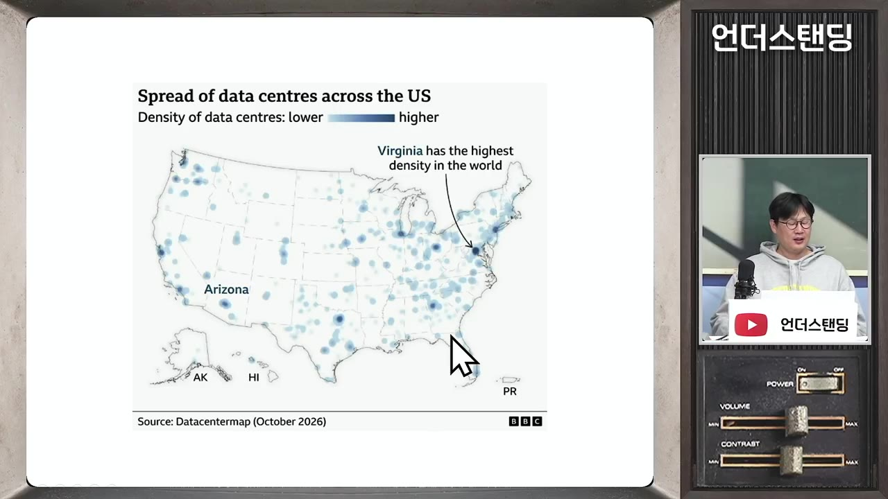
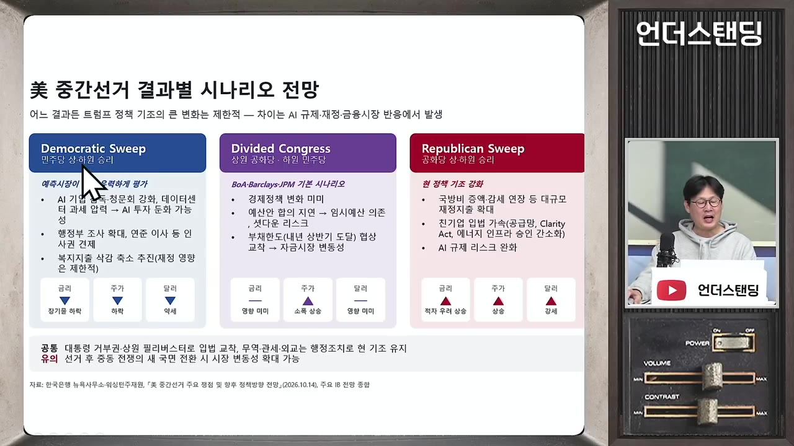

미국인 60% "트럼프 싫다" 미국 중간선거서 공화당 텃밭 텍사스·알래스카 흔들 (언더스탠딩 장순원 기자) ｜2026년 10월 28일 녹화
🎙️ 자막 대신 영상 음성을 받아써서 정리 (ko (음성 받아쓰기·GPU))
▶ 원본 영상 보기한눈에 보기
- 트럼프 대통령의 국정 지지율이 40% 아래로 떨어지고 '일 못한다'는 평가가 60%에 가까워지면서, 다음 주 화요일 미국 중간선거는 공화당에 불리한 분위기라는 분석입니다.
- 하원은 민주당이 우세·유력 지역만 가져가도 약 220석으로 과반(218석)을 넘길 것으로 보지만, 상원은 6~7곳의 경합 지역 결과에 따라 승패가 갈립니다.
- 공화당 텃밭인 텍사스·알래스카와, 민주당이 지켜야 하는 미시간이 최대 격전지이며 여론조사 차이는 1~2%p로 오차 범위 안입니다.
- 최대 쟁점은 물가·기름값·이란 전쟁이고, AI 데이터센터 때문에 전기요금이 오를 수 있다는 걱정까지 선거 이슈로 떠올랐습니다.
- 민주당이 이겨도 대통령 거부권 때문에 정책이 바로 뒤집히지는 않지만, AI 산업 지원 약화와 예산·부채한도 갈등에 따른 금융시장 변동성이 커질 수 있다는 전망입니다.
이런 분께 도움이 됩니다
- 미국 중간선거 판세와 격전지별 쟁점을 짧은 시간에 파악하고 싶은 분.
- 선거 결과가 AI 산업, 미국 국채금리, 한국의 알래스카 LNG 투자 압박에 어떤 영향을 줄지 궁금한 분.
핵심 내용
판세 결론: 하원은 민주당 유력, 상원은 초접전
- 이번 선거에서는 상원 100석 가운데 3분의 1인 35석과 하원 435석 전원을 새로 뽑습니다. 지금은 공화당이 상·하원을 모두 차지하고 있지만 차이가 크지 않습니다.
- 하원: 공화당이 219석으로 과반선(218석)을 겨우 넘긴 상태입니다. 경합 지역은 17곳 정도입니다.
- 민주당은 경합 지역을 모두 내줘도, 우세·유력 지역 34곳만 확보하면 약 220석으로 과반을 넘길 수 있다는 분석입니다. (4:33)
- 상원: 현재 민주당 47석, 공화당 53석입니다. 승패를 가늠하기 어려운 경합 지역은 매체마다 다르지만 6~7곳입니다.
- 민주당은 이번에 선거가 없는 34석과 확실히 이기는 9석을 이미 갖고 있습니다. 여기에 우세 지역 4곳과 경합 지역 4곳 정도를 더하면 51석으로 과반이 됩니다. (8:09)
- 다만 경합 지역 가운데 6곳 정도가 원래 공화당 텃밭이라서, 표심을 뺏어 오는 게 쉽지 않습니다.
- 연초에는 공화당 우세였던 텍사스·알래스카가 8월을 기점으로 경합 지역으로 바뀌었고, 지금은 민주당 쪽으로 살짝 기운 모습입니다. (6:16)
- 경합 지역의 여론조사 차이는 민주당이 1~2%p 앞서는 수준이라 오차 범위 안입니다.

| 구분 | 현재 의석 | 과반 | 전망 |
|---|---|---|---|
| 하원 | 공화 219석 | 218석 | 민주당 탈환 가능성 매우 높음 (약 220석) |
| 상원 | 민주 47 · 공화 53 | 51석 | 경합 6~7곳 중 4곳 정도를 민주당이 가져와야 탈환 |
💡 하원은 사실상 승부가 기울었고, 진짜 관전 포인트는 민주당이 상원까지 가져가느냐입니다.
공화당이 불리한 이유: 중간선거 법칙과 트럼프 반감
- 중간선거는 대통령 임기 중간에 치르는 '중간 평가'입니다. 1800년대 이후 39번의 중간선거에서 집권당이 이긴 경우는 3번뿐이고, 대통령 소속 정당은 평균 27석 정도를 잃었습니다. (1:06)
- 트럼프 지지율 그래프는 '싫다'는 위로, '좋다'는 아래로 벌어져 '악어 입' 모양입니다. '일 잘한다'는 40% 밑으로 떨어졌고, '일 못한다'는 60%에 가깝습니다. (2:06)

- 응답자의 40% 정도가 트럼프에 반대하려고 투표하겠다고 답했습니다. 1998년 이후 중간선거 가운데 가장 높은 반대표입니다.
- 공화당 지지율은 40%를 겨우 지키는 수준입니다. 민주당이 특별히 잘한 게 없는데도 앞서는 것은 '반사이익'이라는 평가입니다.
💡 당보다 트럼프 개인에 대한 반감이 공화당 지지율을 끌어내리고 있습니다.
격전지 ① 텍사스: 스캔들 많은 친트럼프 후보 vs 성경 말하는 민주당 후보
- 대표적인 공화당 텃밭인데도 지금 경합 지역입니다. 폭스뉴스 조사는 49 대 49 동률이고, 휴스턴대 조사는 탈라리코 48, 팩스턴 46입니다. (10:11)
- 공화당 켄 팩스턴 (주 법무장관 출신)
- 지난 5월 공화당 예비선거에서 4선 현역 상원의원 존 코닌을 꺾고 후보가 됐습니다.
- 의회 보좌관과의 불륜 의혹이 있고, 그 보좌관을 팩스턴의 후원 기업이 채용한 일까지 엮여 탄핵 소추를 당했습니다. 16개 안팎(자막상 불분명)의 소추 사유가 모두 무죄로 판명돼 탄핵은 피했습니다.
- 2020년 대선 불복 집회에서 연설했고, 경합주 결과를 뒤집으려는 소송을 냈습니다. 바이든 정부와는 이민·환경·백신 정책으로 맞섰습니다. 그래서 MAGA 진영에서는 '전사'로 통합니다.
- 트럼프는 예비선거 약 일주일 전에 현역 코닌 대신 팩스턴 지지를 선언했습니다.
- 트럼프와 닮은 이력(불륜, 탄핵, 생존) 때문에 중도층과 일부 공화당 지지층이 등을 돌렸다는 분석입니다.
- 민주당 제임스 탈라리코 (전직 영어 교사, 현직 주 하원의원)
- 30대이고 신학교 대학원생으로 알려져 있습니다. 기독교 신앙을 앞세우는 진보 정치인으로, 출마 선언 때부터 "부자보다 노동자 계층을 위해 일하겠다"고 밝혔습니다.
- 정치를 성경과 종교의 언어로 풀어 말하는 점이 보수 기독교 성향이 강한 텍사스에서 통한다는 평가입니다. (13:03)

- 십계명 법안 제출
- 성경으로 반대
- 2025년 재추진
- 안식일 연설
- 상원 출마
- 1십계명 법안 제출
2023년 텍사스 주의회에 모든 공립학교 교실에 십계명을 게시하는 법안이 올라옴
- 2성경으로 반대
청문회에서 마태복음 6장 5절(남에게 보이려고 길모퉁이에서 기도하지 말라)을 인용하며 "신앙을 벽에 거는 것은 비미국적이고 비신앙적"이라고 비판. 반대 여론 속에 법안 무산
- 32025년 재추진
공화당이 일요일에도 일하며 법안을 밀어붙임
- 4안식일 연설
"십계명이 안식일을 지키라고 하니 너희부터 지켜라"는 연설로 전국적으로 이름을 알림
- 5상원 출마
지금 여론조사에서 1~2%p 앞서는 중 (14:47)
- 탈라리코가 이기면 1988년 이후 사실상 처음으로 텍사스에서 민주당 상원의원이 나오는 것이라고 진행자는 설명했습니다.
격전지 ② 알래스카: LNG 기대보다 전쟁발 에너지값 부담이 크다
- 공화당 텃밭인데도 공화당 지지율이 빠르게 떨어져 1~2%p 차이 접전입니다. 공화당은 현역 설리번 의원, 민주당은 원주민 출신의 메리 펠툴라 후보입니다. (15:44)
- 알래스카는 인구가 약 70만 명입니다. 겨울이 길고 혹독해 물가가 비싼데, 그 대부분이 가스에 의존하는 연료비 때문입니다.
- 가스 사정
- 북쪽 가스전에는 가스관이 없어서 주민들이 쓰지 못합니다. 한국 기업들이 540억 달러를 투자할지 말지 논의 중인 사업이 바로 이 가스관입니다. (16:44)

남쪽 가스전은 1960년대에 지어져 고갈 단계입니다. 지난겨울 저장분을 거의 다 써서 올겨울 난방 걱정이 큽니다.
현재 가스 가격은 약 10달러(단위는 자막상 '1000평방미터당'으로 불분명)인데, 북쪽 가스를 트럭으로 실어 오면 약 20달러, 캐나다산을 쓰면 약 40달러입니다.
LNG 프로젝트는 여야 모두 찬성: 펠툴라도 반대하지 않고 "내가 더 잘 끌어올 수 있다"고 내세웁니다. 설리번은 트럼프가 한국 투자를 발표할 때 뒤에 서 있었다는 점을 성과로 홍보합니다.
- 다만 이 사업은 15~20년 동안 "한다"는 말만 반복돼 와서, 주민들이 확신하지는 못합니다.
약한 고리는 이란 전쟁: 설리번은 전쟁에 찬성하는 입장이고, 펠툴라는 "전쟁이 에너지 요금을 끌어올려 주민을 해친다"고 공격합니다. (20:01)
💡 가스값에 삶이 걸린 지역이라서 'LNG 호재'보다 '전쟁으로 오른 에너지값'이 더 크게 체감되고 있습니다.
격전지 ③ 미시간: 민주당이 꼭 지켜야 하는 곳
- 2024년 대선에서는 트럼프가 이겼지만, 같은 때 치른 상원 선거에서는 민주당이 이긴 지역입니다. 지금 민주당 의석이라 내주면 타격이 큽니다. (21:07)
- 현역 민주당 의원이 출마를 포기해서, 민주당은 현역 프리미엄 없이 정치 신인을 내세웠습니다.
- 민주당 압둘 엘사이드: 이집트계 이민자 후손인 무슬림이고 공중보건 전문가입니다. 선출직 경험은 없습니다.
- 보험료와 본인 부담금 없이 평생 의료를 보장하는 의료보험 개혁을 주장합니다. "기업 혜택을 줄여 복지와 노동계층에 써야 한다"는 입장입니다. (22:02)
- 공화당 마이클 로저스: FBI 요원 출신(진행자 기억 기준)이고 대표적인 친트럼프 인사입니다. 엘사이드가 무슬림형제단과 관련 있다는 주장을 계속 퍼뜨리고 있습니다.
- 최근 민주당 쪽으로 약간 넘어오는 분위기라 민주당 소폭 우세로 보는 매체도 있지만, 많은 매체는 아직 경합으로 분류합니다. (22:44)
선거를 흔드는 쟁점: 기름값·전쟁·데이터센터
- 최대 쟁점은 물가와 생활비, 기름값, 전쟁입니다.
- 기름값: 휘발유는 전쟁 이후 갤런당 약 3달러에서 약 4달러로 올랐습니다. 일주일에 한 번 주유할 때마다 "전쟁 왜 한 거야" 하고 욕한다는 외신 보도도 소개됐습니다. (24:24)
- 더 큰 문제는 경유입니다. 운송과 기계에 두루 쓰여 생활물가 전체로 번지고, 농기계가 모두 디젤을 쓰는 농촌은 전통적인 트럼프 강세 지역입니다.

- 전쟁: NBC(자막상 'mbc') 여론조사에서 이란 전쟁을 지지하지 않는 후보에게 투표하겠다는 응답이 57%(자막에서 '한 60%'라고도 함)였고, 지지하는 후보에게 투표하겠다는 응답은 24%뿐이었습니다. (26:30)
- AI 데이터센터: 미국에 약 3,000개가 있고, 몇 년 안에 2배 정도로 늘어날 전망입니다. 주로 동부와 남부에 몰려 있습니다.

- 주민들의 걱정은 송전선·발전소 증설에 따른 전기요금 인상(미국은 지역별 요금 차등), 냉각수 때문에 공업·농업용수가 부족해질 가능성입니다. 게다가 고용 효과도 적다는 불만이 있습니다.
- 민주당 후보들은 "부지사 시절 데이터센터를 허가했다, 데이터센터의 꼭두각시"라는 식의 TV 광고로 공격하고, 공화당은 수세적으로 방어하는 구도입니다. (27:15)
💡 트럼프 정부가 규제를 풀어 밀어준 AI 데이터센터가 이제는 '내 전기요금' 문제가 되어 공화당의 약점이 됐습니다.
막판 변수
- 이란 전쟁 휴전·타결: "위대한 승리"라며 합의문을 발표하면 유가가 급락해 판세를 흔들 수 있습니다. 다만 남은 시간이 짧고, 유권자가 체감할지는 미지수입니다. (28:55)
- 샤이 트럼프: 2016년, 2020년, 2024년 대선 모두 여론조사가 공화당을 낮게 잡았습니다. 숨은 지지층이 나오거나 열세에 공화당 지지층이 결집하면 경합주 결과가 달라질 수 있습니다. (29:51)
- 사전투표 증가: 4년 전보다 사전투표가 많고, 특히 경합주에서 늘었습니다. 사전투표는 노령층과 민주당 지지자가 많이 하는 추세라 민주당에 유리한 신호로 보는 언론도 있습니다.
- 진행자는 "열렬한 지지층이 있는 쪽이 접전에서 유리하니 공화당이 오히려 살짝 유리할 수도 있다"는 의견을 냈습니다.
민주당이 이기면 무엇이 달라지나
- 정책이 바로 뒤집히지는 않음: 대통령 거부권을 넘으려면 3분의 2 의석이 필요하고, 상원 필리버스터(장시간 연설로 표결 지연)를 끝내려면 60표가 필요합니다. 하지만 이번에는 양쪽 모두 51석도 아슬아슬합니다. (30:46)
- 무역, 관세, 산업 규제 상당 부분은 대통령 권한이라서 의회가 마음대로 바꾸지 못하고, 서로 막는 구도가 될 전망입니다.
- AI 산업 위축 가능성: 상원이든 하원이든 한 곳만 가져가도 청문회를 열어 관료와 기업인을 부르고 결정 과정을 따질 수 있습니다. (32:27)
- 100% 보너스 상각 제도: 설비 투자액을 여러 해에 나눠 비용 처리하는 대신 첫해에 전액 비용으로 처리해 세금을 줄여 주는 제도입니다. 해마다 대규모 투자를 하는 AI 기업에 큰 혜택이라서 민주당은 '특혜'로 보고 손보려 합니다.
- AI 기업의 초과이익에 과세하는 법안도 민주당에서 나오고 있습니다. 대통령이 거부권을 쓸 수 있지만, 민주당이 압승하면 2028년 대선까지 고려한 기업들이 미리 투자를 줄일 압력이 될 수 있습니다. (34:11)
- 반론(진행자 의견): 중국과 경쟁해야 하니 민주당도 데이터센터를 막지는 못하고, 전기요금 같은 생활 문제 위주로 손볼 것이라는 의견입니다. 기자도 "트럼프 정부의 전폭적 지원과 비교하면 분위기가 달라진다"는 정도라고 정리했습니다.
시나리오별 영향

| 시나리오 | 가능성 | 예상 영향 |
|---|---|---|
| 민주당 상·하원 모두 승리 | 예측시장(돈을 걸고 베팅하는 시장)에서 가장 높게 봄 | AI 기업 청문회·감독 강화, 트럼프 정부의 복지 지출 삭감에 제동 |
| 상원 공화당, 하원 민주당 (분할) | 중간 | 정책 변화는 크지 않음. 대신 예산안 합의와 내년 상반기 부채한도 협상이 꼬이면 셧다운 위험, 자금시장 변동성 확대, 미 국채금리에도 영향 |
| 공화당 상·하원 모두 승리 (역전승) | 낮음 | 현재 정책 기조 강화 |
- 하원을 민주당이 잡아 지출이 줄면, 요즘 높다는 미국 국채금리가 조금 낮아지는 효과가 있을 수 있다는 의견도 나왔습니다(영상 속 주장).
- 결과는 미국 시간 화요일 투표 후, 한국 시간으로 수요일 저녁쯤 나올 것으로 봤습니다. (38:12)
한국과의 연결: 알래스카 LNG 압박
- 알래스카에서 공화당 설리번 후보가 이기면 "한국 덕분"이라며 한국에 대한 투자 압력이 더 세질 수 있다는 우려가 나왔습니다. (38:49)
- 트럼프가 한국과 합의 없이 투자를 먼저 발표한 것은 공화당 선거 지원용이자, "이미 하기로 한 것 아니냐"며 계속 압박하는 카드로 쓰일 수 있다는 해석입니다(출연진 의견).
기억할 숫자·인용
- 3번 / 39번: 1800년대 이후 중간선거에서 집권당이 이긴 횟수
- 평균 27석: 중간선거에서 대통령 소속 정당이 잃은 의석
- 40% 미만 / 약 60%: 트럼프 '일 잘한다' / '일 못한다' 평가
- 40%: 트럼프에 반대하려고 투표하겠다는 응답 (1998년 이후 중간선거 최고)
- 하원 219석(공화) / 과반 218석, 민주당 예상 약 220석
- 상원 47(민주) : 53(공화), 과반 51석, 경합 6~7곳
- 텍사스 49:49(폭스뉴스), 48:46(휴스턴대, 탈라리코 우세)
- 540억 달러: 알래스카 LNG 가스관에 거론되는 한국 기업 투자액
- 휘발유 3달러 → 4달러: 전쟁 이후 가격 변화
- 57% vs 24%: 전쟁 반대 후보 / 지지 후보에 투표하겠다는 응답
- 약 3,000개: 미국 데이터센터 수 (몇 년 안에 2배 전망)
- "신앙을 벽에 걸어놓는 것 자체가 예수의 가르침에서 어긋난다." — 탈라리코 (영상 속 소개)
생각해볼 점
- (영상 내용) 경합 지역 차이가 1~2%p로 모두 오차 범위 안이고, 미국 여론조사는 세 번의 대선에서 공화당을 낮게 잡았습니다. (내 의견) '민주당 상원 탈환'은 아직 전망일 뿐이며, 결과를 보고 판단하는 편이 안전합니다.
- (영상 내용) 민주당 승리가 AI 투자 위축으로 이어진다는 기자의 전망과, 중국과의 경쟁 때문에 규제가 제한적일 것이라는 진행자의 반론이 엇갈렸습니다. (내 의견) AI·데이터센터 관련 투자 판단에 쓰려면 100% 보너스 상각 제도 같은 실제 법안의 진행 상황을 따로 확인해야 합니다.
- (영상 내용) 알래스카 결과가 한국의 LNG 투자 압박으로 이어진다는 부분은 출연진의 해석입니다. 공식 발표나 협상 내용으로 확인된 사실은 아닙니다.
바로 해볼 일
- 한국 시간 수요일 저녁, 상원 경합 지역(텍사스·알래스카·미시간) 결과와 상원 51석 확보 여부를 확인하기
- 선거 결과에 따라 미국 국채금리와 AI·데이터센터 관련 종목 흐름이 어떻게 반응하는지 메모해 두기
- 알래스카 LNG 사업에 대한 한국 정부·기업의 공식 입장을 뉴스로 확인하기